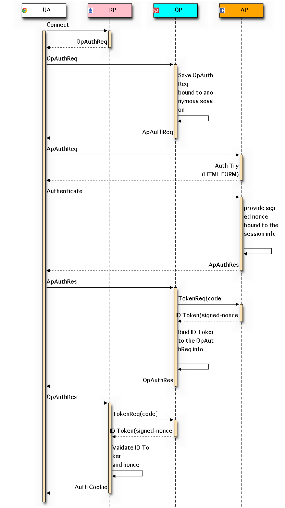

Decoupling Identity and Authentication¶
Decoupling: Why¶
- User can select identity providers(OP) for particular service provider(RP).
- User can store his authentication credential only at highly trusted service(AP).
- RP can specify a authentication provider. But RP can’t know User’s idetifier at authentication provider.
- The trusted service can not correlate Users activity.
Flow¶
Connect-Connect Flow¶

- AP-OP authentication process can deploy the other protocol like SAML other than OpenID Connect.
Sequence¶
User starts OpenID Connect sign-in process at a RP.
The RP composes Connect Authentication Request to the OP ( prepared by the RP or specified by User ).
- RP can specifiy AP and protocol for the User to be authenticated through OpenID Reuqest Object.
The Authentication Reuqest is redirected to the OP.
The OP holds the OpAuthReq bound to User’s anonymous session.
The OP composes the other Connect Authentication Request(ApAuthReq) to the AP ( specified by the RP, prepared by the OP or specified by User ).
The Authentication Reuqest is redirected to the AP.
The AP typically provides a authetication form to the User.
The User sends his credential to the AP.
The AP issues a nonce, sign it his private key and binds the nonce to the User’s sesion information.
The AP returns the Authetication Response to the OP through the User’ agent.
The OP directly request to the AP Token Endpoint to get ID Token(ApIdToken) including signed nonce.
The OP binds the ID Token to the OpAuthReq information previously stored.
The OP returns the Authetication Response to the RP through the User’ agent.
The RP directly request to the OP Token Endpoint to get ID Token(OpIdToken) including signed nonce.
After validating the OpIdToken, the OP optionaly validate the signed nonce with the AP’s public key.
The RP now issues the session information based on OpIDToken.